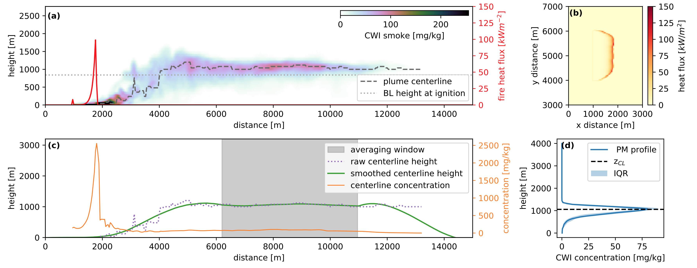

CWIPP model documentation¶
Note
This documentation page is currently under development.
Cross-Wind Integrated Plume Penetration (CWIPP) model is an analytical method for predicting the vertical distribution of smoke in the atmosphere above a wildfire.
This collection of diagnostic routines can be applied as a stand-alone model for real-world plumes, as well as used with numerical output from WRF-SFIRE LES simulations.
Scientific background and details of model development can be found in: https://acp.copernicus.org/preprints/acp-2020-827/
This documentation page is designed to aid implementation of CWIPP within BlueSky Canada smoke modelling framework with the goal of improving operational forecasts produced for: https://firesmoke.ca/
